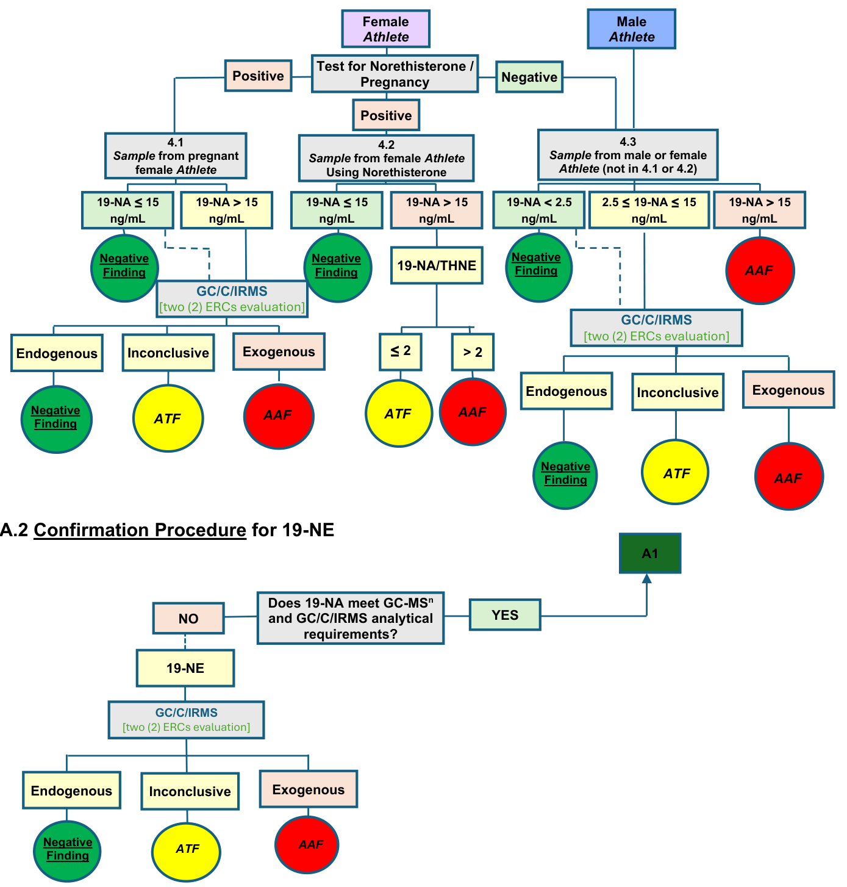

Technical Documents · ISL TD2027NA
Edition v1.1, 2027 (version 1.1) · effective 1 January 2027 · current
Retrieved on 26 November 2026 from https://www.wada-ama.org/sites/default/files/2026-04/td2027na_v1.1_eng_0.pdf
Editions: v1.1, 2027 (current) · v2.0, 2021 · v1.0, 2021 · v1.0, 2019 · v1.0, 2017 · v1.0, 2016 · v1.0, 2015 · v1.0, 2014 · v1.0, 2012 · v1.0, 2010 · v1.0, 2010 · v1.0, 2004
p. 1
HARMONIZATION OF ANALYSIS AND REPORTING OF 19-NORSTEROIDS
1.0 Introduction
This Technical Document (TD), which constitutes an integral part of the International Standard for Laboratories (ISL[1]), has been established to harmonize the analysis of 19-norsteroids in urine and the reporting of 19-norsteroids findings by Laboratories.
The detection of the Use of 19-norsteroids (e.g., 19-nortestosterone (nandrolone), 19-norandrostenedione, 19-norandrostenediol) is based primarily upon the identification of the main urinary Metabolite, 19-norandrosterone (19-NA). More than one Metabolite of administered 19-norsteroids may be detected in urine Samples and reported [e.g., 19-noretiocholanolone (19-NE)]; however, the identification of 19-NA, including the demonstration, where required, that the 19-NA is not of endogenous origin, is generally sufficient to report an Adverse Analytical Finding (AAF). In some cases, the analysis of 19-NE may be needed to establish the Use of 19-norsteroids (see Article 3.2.1.2.1)
[Comment to Article 1.0: In the context of this ISL TD, "endogenous" origins of 19-NA at levels higher than 2.5 ng/mL include: i) pregnancy[2-4], and ii) in situ microbial degradation of androsterone (A) to 19-NA[5]. This ISL TD provides elements to determine the source of 19-NA in each of these cases. In rare cases, the consumption of edible parts of non-castrated male pigs or cryptorchids can also result in 19-NA at levels higher than 2.5 ng/mL[4, 6-12].]
2.0 Procedure for the Analysis of 19-Norsteroids
The analysis of 19-norsteroids follows a two (2)-step procedure:
a) An Initial Testing Procedure (ITP) (see Article 3.1) based on the Gas Chromatography-Mass Spectrometric (GC-MSⁿ ) detection and estimation of the concentration of 19-NA (and 19-NE, where necessary - see also Article 3.2.1.2.1), and
b) A subsequent Confirmation Procedure (CP) (see Article 3.2), which consists of the GC-MSⁿ identification (as per ISL TD IDCR[13]) and estimation of the concentration of 19-NA and/or 19-NE (where necessary), and the eventual performance of Gas Chromatography/Combustion/Isotope Ratio Mass Spectrometry (GC/C/IRMS) analysis (see Article 3.2.1.2).
For the estimation of 19-NA and 19-NE concentrations by GC-MSⁿ , the Laboratory shall target, both during the ITP and the CP, the total content of free steroid obtained from the non-conjugated steroid plus the free steroid fraction released after hydrolysis of the respective phase-II glucuronidated Metabolite with an enzyme with substrate specificity for β-D-glucuronide linkages (e.g., purified β-glucuronidase from E. coli or other Fit-for-Purpose enzyme with the same substrate specificity, as determined by the Laboratory during Test Method validation).
p. 2
3.0 Analytical Testing Procedure Requirements
3.1 Initial Testing Procedure
The ITP of 19-norsteroids includes the GC-MSⁿ detection and estimation of the concentration of 19-NA (and 19-NE, where necessary).
a) The ITP shall be validated according to the ITP validation requirements established in the ISL TD VAL[14].
- The Limit of Detection (LOD) of the ITP for 19-NA and 19-NE, as estimated during Test Method validation, shall be less than or equal to (≤) 1.25 ng/mL.
b) The ITP shall include the enzymatic hydrolysis of the 19-NA (and 19-NE, where necessary) glucuronide using an enzyme with substrate specificity for β-D-glucuronide linkages (e.g., purified β-glucuronidase from E. coli). The efficiency of hydrolysis shall be monitored in each test Aliquot with isotopically labeled Androsterone (A)-glucuronide (or an equivalent scientifically recognized steroid glucuronide alternative).
c) The Aliquot shall be subject to derivatization to produce TMS derivatives of the target Metabolite(s) (TMS enol ethers and/or TMS ethers). The efficiency of the derivatization shall be controlled in each test Aliquot through the monitoring of mono-O-TMS vs. di-O-TMS derivative of A.
d) The ITP shall include the following characteristics:
i. A Single Point Calibrator (SPC) prepared in urine at a concentration of 19-NA (or 19-NE, where necessary) between 2.5-15 ng/mL.
[Comment to Article 3.1 d): Alternatively, at the Laboratory's discretion and according to its Test Method validation results, a calibration curve in urine with a working range of at least 2.5-15 ng/mL may also be used.]
ii. A urine NQC with an estimated concentration of 19-NA (or 19-NE, where necessary), if detected in the sample, not higher than (≤) 1.25 ng/mL.
iii. A urine PQC containing 19-NA (or 19-NE, where necessary) at a concentration higher than (>) 2.5 ng/mL. It is recommended that the PQC be prepared at a different concentration than the SPC.
iv. An appropriate labeled (e.g.,² H- or 13 C-) steroid internal standard (ISTD).
e) The 19-NA (or 19-NE) concentration estimated during the ITP shall not be corrected for the specific gravity (SG) to subject a Sample to the CP,
p. 3
3.2 Confirmation Procedure
3.2.1 "A" Sample Confirmation Procedure
The "A" CP of 19-norsteroids includes the GC-MSⁿ estimation of the concentration and identification (in compliance with the ISL TD IDCR[13]), as well as the eventual GC/C/IRMS analysis, of 19-NA (or 19-NE, where necessary) to establish the origin (endogenous or exogenous) of the Metabolite(s) detected.
3.2.1.1 "A" Sample GC-MSⁿ Confirmation Procedure
The GC-MSⁿ CP for 19-norsteroids shall be validated according to the CP Qualitative Procedure validation requirements established in the ISL TD VAL [14].
a) The Limit of Identification (LOI) of the GC-MSⁿ CP for 19-NA and 19-NE, as estimated during Test Method validation, shall be less than (<) 2.5 ng/mL.
b) Like the ITP, the GC-MSⁿ CP shall include the enzymatic hydrolysis of the glucuronidated Metabolite(s) and the derivatization to produce TMS derivatives (TMS enol ethers and/or TMS ethers). The efficiency of both processes shall be monitored in each CP Aliquot (see Articles 3.1 b) and c).
c) The GC-MSⁿ CP for 19-NA shall follow the requirements for the confirmation of Non-Threshold Substances subject to a Minimum Reporting Level (MRL), as specified in the ISL TD MRL[15], including the use of:
i. A PQC urine sample at the MRL of 15 ng/mL.
ii. A Single Point Calibrator (SPC)¹ prepared in urine at 150% MRL (22.5 ng/mL).
iii. A urine NQC with an estimated concentration of 19-NA (or 19-NE, where necessary), if detected in the sample, not higher than (≤) 1.25 ng/mL.
iv. An appropriate labeled ISTD (e.g.,² H-19-NA glucuronide).
[Comment 1 to Article 3.2.1.1: No quantification (and, therefore, no Measurement Uncertainty estimation) is required in the GC-MSⁿ CP. The use of the SPC at 22.5 ng/mL and appropriate QC samples is sufficient to confirm the estimated concentration of 19-NA (or 19-NE, where necessary.]
[Comment 2 to Article 3.2.1.1: The SPC, NQC and PQC shall be subjected to the same sample preparation procedure as the Sample Aliquot.]
¹The SPC (or calibration curve) shall be prepared from a different batch or different stock solution of Reference Material than the PQC. For the SPC, it is preferably that the concentration is based on/traceable to a Certified Reference Material.
p. 4
3.2.1.2 "A" Sample GC/C/IRMS Analysis
3.2.1.2.1 Conducting GC/C/IRMS Analysis
a) The conditions for performing GC/C/IRMS analysis for 19-NA are described in Table 1 below.
b) The Laboratory should consider conducting GC/C/IRMS analysis for 19-NE when the GC/C/IRMS analysis of 19-NA is not conclusive (e.g., presence of interferences or when 5α-reductase inhibitor activity is confirmed in the Sample).
c) If the Laboratory does not have the analytical capacity to perform GC/C/IRMS analysis for 19-NA (or 19-NE, if applicable), the Laboratory shall, in consultation with the Testing Authority (TA) (or the Results Management Authority (RMA), if different), have Samples transferred to another Laboratory that has such analytical capacity (Analytical Method included in the Laboratory's Scope of ISO/IEC 17025 Accreditation).
Table 1 GC/C/IRMS analysis of 19-NA
| GC/C/IRMS analysis | Estimated concentration | Samples |
|---|---|---|
| Not needed | > 15 ng/mL2, 3 (AAF) | Males; Females – Non-pregnant, and – Absence of 3,5-tetrahydronorethisterone (THNE) |
| Not needed | ≤ 15 ng/mL2, 3 | Females – Presence of THNE |
| Required | 2.5 - 15 ng/mL2, 4 | Males; Females – Non-pregnant, and – Absence of THNE |
| Required | > 15 ng/mL2, 3 | Females – Pregnant females |
| Optional | 2.5 - 15 ng/mL⁴ | Females – Pregnant females |
| Optional | < 2.5 ng/mL | Males; Females – Non-pregnant – Absence of THNE |
p. 5
²According to the ISL TD MRL[15], only when the estimated concentration of 19-NA (or 19-NE, where applicable) in the Sample exceeds that of the 150% MRL SPC, and the estimated concentration of 19-NA (or 19-NE, where applicable) in the 100% MRL PQC is lower than (<) the respective concentration in the SPC, the Laboratory can conclude with enough confidence that the concentration of 19-NA in the Sample is higher than (>) the MRL of 15 ng/mL.
For the avoidance of doubt, when the analysis does not fulfill these requirements, e.g., when the estimated concentration of 19-NA is higher than (>) the 100% MRL PQC but lower than (<) the 150% MRL SPC, the Laboratory cannot conclude with sufficient confidence that the concentration of 19-NA in the Sample is higher than (>) the MRL. Therefore, in those cases, the Laboratory shall subject the Sample to GC/C/IRMS analysis (or subcontract the analysis to another Laboratory with the required analytical capacity) to establish the origin of 19-NA in the Sample and determine whether the result constitutes an AAF or not.
- ³When the SG of the Sample (SGSample), as measured by the Laboratory during the CP, is higher than (>) 1.018, and the GC-MSⁿ CP-estimated concentration of 19-NA in the Sample is confidently greater than (>) the MRL of 15 ng/mL (as determined in accordance with the ISL TD MRL)[15], the estimated 19-NA concentration shall be adjusted for the SG of 1.020[15]. Only when the SG-adjusted concentration is > 15 ng/mL the result can be reported as an AAF without the need for GC/C/IRMS analysis.
- ⁴In such cases, the adjustment of the 19-NA concentration for a high SGSample (> 1.018) is not necessary, since it would only lead to a lower adjusted concentration, whereas the actual concentration in the Sample, without the adjustment for the SGSample, should allow the performance of the GC/C/IRMS analysis
3.2.1.2.2 GC/C/IRMS CP Validation and Analysis Requirements
Refer to the ISL TD IRMS[16] for general GC/C/IRMS Test Method validation and analysis requirements.
3.2.1.2.3 Interpretation of GC/C/IRMS Results
a) To reject the hypothesis of endogenous or in situ 19-NA (or 19-NE, where applicable) formation based on the application of GC/C/IRMS analysis (i.e., to report the finding as an AAF), the │∆δ¹³C│values between two (2) ERCs and 19-NA (or 19-NE, where applicable), i.e., |Δδ¹³C| = |δ¹³CERC - δ¹³C19-NA (or 19-NE)|, shall be greater than (>) 3.0 ‰ (refer also to the ISL TD IRMS[16] for use of ERCs and interpretation of GC/C/IRMS test results) .
[Comment to Article 3.2.1.2.4 a): Androsterone (A) shall not be used as an ERC for 19-NA GC/C/IRMS analysis when there are indications of the administration of testosterone or its precursors (e.g., prasterone). In such cases, an alternative ERC as described in ISL TD IRMS[16] shall be used.]
b) Due to the occurrence of preparations of 19-norsteroids with a carbon isotopic signature (¹³ C/¹² C) close to that of endogenous human urinary steroids (e.g., δ¹³C19-NA between -16.000 ‰ and -24.000 ‰)[11, 17], the result of the GC/C/IRMS analysis of the excreted 19-NA (or 19-NE) may not always readily indicate its exogenous origin in Samples (result of the GC/C/IRMS analysis negative or inconclusive).
c) If the consumption of edible parts of intact pigs or cryptorchids is invoked by an Athlete as the unlikely origin of a 19-NA finding, the TA (or RMA, if different) shall consider the compatibility of any previously collected and/or follow-up Samples (viz. the analytical results) with that explanation in terms of 19-NA excretion pattern in p. 6 urine. The excretion kinetics of 19-NA and 19-NE following oral ingestion will have a different time course than after an injection of 19-norsteroids [6, 9, 12, 19-21].
3.2.1.3 Additional Tests
3.2.1.3.1 Tests for Norethisterone and Pregnancy
19-NA is excreted during pregnancy[2-4] and as a minor Metabolite of norethisterone[18, 22, 23], a progestogen agent that is present in some oral contraceptives of permitted use in some countries. Therefore, when the estimated concentration of 19-NA is equal to or exceeds (≥) 2.5 ng/mL in the urine Sample of a female Athlete, the Laboratory shall:
a) Test for pregnancy based on the measurement of urinary human Chorionic Gonadotrophin (hCG) in the urine Sample.
b) Establish the presence or absence of 3,5-tetrahydronorethisterone (THNE), the main Metabolite of norethisterone, and whether it is compatible with the 19-NA concentration.
[Comment to Article 3.2.1.3.1 b): When testing for the presence of THNE, Laboratories should target the 3α,5β isomer, namely 5β-estran-17α-ethynyl-3α,17β-diol [23]. With 19-NA being a minor Metabolite of norethisterone, 19-NA concentrations at levels higher than (>)15 ng/mL should be associated with an estimated concentration ratio of 19-NA / 5β-estran-17α-ethynyl-3α,17β-diol ≤ 2 in the Sample.]
3.2.1.3.2 Test for Demethylation
In addition, 19-NA and 19-NE may be produced in urine Samples, in small concentrations, by in situ 19-demethylation of androsterone (A) and Etiocholanolone (Etio), respectively[5]. This potential in situ formation of 19-NA and 19-NE is verified by GC/C/IRMS analysis[24].
3.2.2 "B" Sample Confirmation Procedure
a) In cases when the AAF for the "A" Sample is based on the GC/C/IRMS results, the "B" Sample CP requires only the GC/C/IRMS analysis.
b) In cases when the estimated concentration of 19-NA (SG-adjusted, if needed) is shown to be greater than (>) 15 ng/mL (in accordance with ISL TD MRL[15] requirements) in a Sample collected from a male or a non-pregnant female Athlete, the "B" Sample CP requires only the identification of 19-NA only, in accordance with the ISL TD IDCR[13].
p. 7
4.0 Interpretation and Reporting of Results
a) The Laboratory shall report 19-NA (and/or 19-NE, where applicable) findings in a Sample from a male or a female Athlete as defined in the Table below (see also flow diagram in Annex A).
b) Where GC/C/IRMS results are to be reported, the Laboratory shall refer to the ISL TD IRMS[16] for GC/C/IRMS results reporting requirements.
Table 2 Interpretation and Reporting of Results for 19-Norsteroids
| Sample Origin | Section | Adverse Analytical Finding | Atypical Finding | Negative Finding |
|---|---|---|---|---|
| 4.1 Pregnant Female Athletes | Results | Results of the GC/C/IRMS analysis are consistent with the exogenous origin of 19-NA. | - Estimated concentration of 19-NA > 15 ng/mL.2, 3 AND - Results of GC/C/IRMS analysis are inconclusive or do not meet the criteria supporting an exogenous origin of 19-NA. | - Estimated concentration of 19-NA ≤ 15 ng/mL.2, 3 AND - GC/C/IRMS analysis is either not performed, or the results are consistent with an endogenous origin of 19-NA. |
| 4.1 Pregnant Female Athletes | Test Report (No reference to the pregnancy status of the Athlete shall be reported) | - Estimated concentration of 19-NA, expressed as “≤15 ng/mL” or “>15 ng/mL” 2, 3. - Results of GC/C/IRMS analysis, including a comment indicating that the GC/C/IRMS finding is consistent with an exogenous origin of 19-NA, the δ¹³C values for 19-NA and the ERCs, as well as the respective uc (‰). | - Estimated concentration of 19-NA >15 ng/mL2, 3. - Results of GC/C/IRMS analysis, including a comment indicating that the GC/C/IRMS finding is inconclusive or does not meet the criteria supporting an exogenous origin of 19-NA, the δ¹³C values for 19-NA and the ERCs as well as the respective uc (‰). | If GC/C/IRMS analysis is performed: - Estimated concentration of 19-NA ≤ 15 ng/mL2, 3. - Include a comment indicating that the GC/C/IRMS finding is consistent with an endogenous origin of 19-NA, the δ¹³C values for 19-NA and the ERC, as well as the respective uc (‰). |
| 4.2 Female Athletes using Norethisterone | Results | - Estimated concentration of 19-NA > 15 ng/mL2, 3. - The estimated concentration ratio of 19-NA/THNE is > 2. | - Estimated concentration of 19-NA > 15 ng/mL2, 3. - The estimated concentration ratio of 19-NA/THNE is ≤ 2. | - Estimated concentration of 19-NA ≤ 15 ng/mL2, 3 |
| 4.2 Female Athletes using Norethisterone | Test Report | - Estimated concentration of 19-NA >15 ng/mL2, 3. - A comment describing the presence of THNE in the Sample. Example: “19-NA was found in the Sample at an estimated concentration > 15 ng/mL. Tetrahydronorethisterone, a Metabolite of norethisterone, was also detected in the Sample. The estimated concentration ratio 19-NA/ THNE is incompatible with norethisterone being the exclusive source of 19-NA”. Results | - Estimated concentration of 19-NA >15 ng/mL2, 3. - A comment describing the presence of THNE in the Sample. Example: “19-NA was found in the Sample at an estimated concentration > 15 ng/mL. Tetrahydronorethisterone, a Metabolite of norethisterone, was also detected in the Sample. The estimated concentration ratio 19-NA/ THNE is compatible with norethisterone being the exclusive source of 19-NA” Results | No reference to the use of norethisterone shall be reported. Results |
| 4.3 Male or Female Athletes (neither pregnant nor using norethisterone) | Results | - Estimated concentration of 19-NA > 15 ng/mL.2, 3 OR - Estimated concentration of 19-NA ≤ 15 ng/mL2,3 and GC/C/IRMS results are consistent with an exogenous origin of 19-NA. OR - 19-NA cannot be reliably analyzed in the Sample (e.g., due to the presence of 5α-reductase inhibitor activity) and the GC/C/IRMS results for 19-NE are consistent with an exogenous origin of 19-NE. | - Estimated concentration of 19-NA ≤ 15 ng/mL2,3 and GC/C/IRMS results are inconclusive or do not meet the criteria supporting an exogenous origin of 19-NA. OR - 19-NA cannot be reliably analyzed in the Sample (e.g., due to the presence of 5α-reductase inhibitor activity) and the GC/C/IRMS results for 19-NE are inconclusive or do not meet the criteria supporting an exogenous origin of 19-NE. | - Estimated concentration of 19-NA < 2.5 ng/mL (and too low to perform GC/C/IRMS analysis). OR - Estimated concentration of 19-NA between 2.5 - 15 ng/mL2, 3 and GC/C/IRMS results are consistent with an endogenous origin of 19-NA. OR - 19-NA cannot be reliably analyzed in the Sample (e.g., due to the presence of 5α-reductase inhibitor activity) and the GC/C/ IRMS results for 19-NE are consistent with an endogenous origin of 19-NE. |
| 4.3 Male or Female Athletes (neither pregnant nor using norethisterone) | Test Report | - If 19-NA > 15 ng/mL with no GC/C/IRMS analysis: • Estimated concentration of 19-NA >15 ng/mL2, 3. • For Samples from female Athletes, include a comment explaining that pregnancy and the use of norethisterone were excluded as the source of 19-NA. Example: “The 19-NA finding is not consistent with pregnancy or the use of norethisterone”. - If 19-NA ≤ 15 ng/mL with positive GC/C/IRMS results • Estimated concentration of 19-NA ≤ 15 ng/mL. • Results of GC/C/IRMS analysis, including a comment indicating that the GC/C/IRMS finding is consistent with an exogenous origin of 19-NA, the δ¹³C values for 19-NA and the ERCs as well as the respective uc (‰). • For Samples from female Athletes, a comment explaining that the use of norethisterone was excluded as the source of 19-NA (e.g., “the 19-NA finding is not consistent with the use of norethisterone”). - If the finding is based on positive GC/C/IRMS results for 19-NE: - Results of GC/C/IRMS analysis, including a comment indicating that the GC/C/IRMS finding is consistent with an exogenous origin of 19-NE, the δ¹³C values for 19-NE and the ERCs as well as the respective uc (‰). | - If 19-NA ≤ 15 ng/mL with inconclusive GC/C/IRMS results: • Estimated concentration of 19-NA ≤ 15 ng/mL2, 3. • Results of GC/C/IRMS analysis, including a comment indicating that the GC/C/IRMS results are inconclusive (e.g., due to the presence of interfering compound(s) or any other factor preventing a reliable GC/C/IRMS analysis) or do not meet the criteria supporting an exogenous origin of 19-NA, the δ¹³C values for 19-NA and the ERCs as well as the respective uc (‰). • For Samples from female Athletes, clarify that pregnancy was excluded as the source of 19-NA Example: “The 19-NA finding is not consistent with pregnancy”. • Recommend the TA (or RMA, if different) to conduct follow-up no-notice tests on the Athlete as soon as possible and evaluate the kinetics of 19-NA excretion in urine. - If the finding is based on inconclusive GC/C/IRMS results for 19-NE: - Results of GC/C/IRMS analysis, indicating that the GC/C/IRMS results are inconclusive (e.g., due to the presence of interfering compound(s) or any other factor preventing a reliable GC/C/IRMS analysis) or do not meet the criteria supporting an exogenous origin of 19-NE, the δ¹³C values for 19-NE and the ERCs as well as the respective uc (‰). | - If GC/C/IRMS analysis is performed: • Estimated concentration of 19-NA (either < 2.5 ng/mL or between 2.5-15 ng/mL). • Results of GC/C/IRMS analysis, including a comment indicating that the GC/C/IRMS analysis is consistent with an endogenous origin of 19-NA, the δ¹³C values for 19-NA and ERC as well as the respective uc (‰). - If the finding is based on negative GC/C/IRMS results for 19-NE: • Results of GC/C/IRMS analysis, including a comment indicating that the GC/C/IRMS analysis is consistent with an endogenous origin of 19-NE, the δ¹³C values for 19-NE and the ERC as well as the respective uc (‰). |
p. 8
p. 9
p. 10
p. 11
5.0 References
[1] World Anti-Doping Code International Standard for Laboratories (ISL).
[2] Reznik Y et al. Rising levels of 19-norstestosterone throughout pregnancy: determination by radioimmunoassay and validation by gas chromatography-mass spectrometry. J Clin Endocrinol Metab 63:1086-108, 1987.
[3] Mareck-Engelke U et al. 19-norandrosterone in pregnant women. In: Schanzer W, Geyer H, Gotzman A, et al. Recent Advances in Doping Analysis (8), Proceedings of the 18th Cologne Workshop on Dope Analysis. Cologne: Sport & Buch Straub: 145-54, 2000.
[4] Guay C et al. Excretion of norsteroids' phase II metabolites of different origin in humans. Steroids 74: 350-8, 2009.
[5] Grosse J et al. Formation of 19-norsteroids by in situ demethylations of endogenous steroids in stored urine samples. Steroids 70: 499-506, 2005.
[6] Debruyckere G, de Sagher R, Van Peteghem C. Influence of the consumption of meat contaminated with anabolic steroids on doping tests. Anal Chim Acta 275: 49-56, 1993.
[7] Le Bizec B et al. Consequence of boar edible tissue consumption on urinary profiles of nandrolone metabolites. I. Mass spectrometric detection and quantification of 19-norandrosterone and 19-noretiocholanolone in human urine. Rapid Commun. Mass Spectrom. 14: 1058-65, 2000.
[8] De Wasch K et al. Consequence of boar edible tissue consumption on urinary profiles of nandrolone metabolites. II. Identification and quantification of 19-norsteroids responsible for 19-norandrosterone and 19-noretiocholanolone excretion in human urine. Rapid Commun. Mass Spectrom. 15: 1442-47, 2001.
[9] Poelmans S et al. Endogenous occurrence of some anabolic steroids in swine matrices. Food Additives and Contaminants 22(9): 808-815, 2005.
[10] Ayotte C. Significance of 19-norandrosterone in athletes' urine samples. Br. J. Sports Med. 40: 25-29, 2006.
[11] Hülsemann F et al. Case Study: Atypical δ¹³C values of urinary norandrosterone. Drug Test Anal. 10(11-12):1728-1733, 2018.
[12] Hülsemann F et al. Excretion of 19-norandrosterone after consumption of boar meat. Drug Test Anal. 12(11-12):1581-1586, 2020.
[13] WADA Technical Document ISL TD IDCR: Minimum Criteria for Chromatographic-Mass Spectrometric Confirmation of the Identity of Analytes for Doping Control Purposes.
[14] WADA Technical Document ISL TD VAL: Minimum Requirements for Validation of Analytical Testing Procedures for Doping Control.
[15] WADA Technical Document ISL TD MRL: Minimum Reporting Levels applied in Doping Control.
[16] WADA Technical Document ISL TD IRMS: Detection of Synthetic Forms of Prohibited Substances by GC/C/IRMS.
[17] Brailsford AD et al. IRMS delta values (13 C) of nandrolone and testosterone products available in the UK: Implications for anti-doping. Drug Test Anal. 10(11-12):1722-1727, 2018
[18] Walker CJ et al. Doping in sport - 1. Excretion of 19-norandrosterone by healthy women, including those using contraceptives containing norethisterone. Steroids 74: 329-35, 2009.
p. 12
[19] Bagchus WM et al. Pharmacokinetic evaluation of three different intramuscular doses of nandrolone decanoate: analysis of serum and urine samples in healthy men. J Clin Endocrtinol Metab 90(5): 2424-30, 2005.
[20] Watson P et al. Urinary nandrolone metabolite detection after ingestion of a nandrolone precursor. Med Sci Sports Exerc. 41(4):766-72, 2009.
[21] Palonek E et al. Atypical excretion profile and GC/C/IRMS findings may last for nine months after a single dose of nandrolone decanoate. Steroids 108: 105-11, 2016.
[22] Van Eenoo P et al. In: W Schänzer, H Geyer, A Gotzmann, U Mareck (eds.) Recent Advances In Doping Analysis (14). Sport und Buch Strauß - Köln 2006; pp. 189-197
[23] Walker CJ et al. Doping in sport: 3. Metabolic conversion of oral norethisterone to urinary 19-norandrosterone. Steroids 74:341-349, 2009.
[24] Hebestreit M et al. Determination of the origin of urinary norandrosterone traces by gas chromatography combustion isotope ratio mass spectrometry. Analyst 131:1021-6, 2006.
[Current versions of WADA's ISL and ISL TDs may be found at https://www.wada-ama.org/en/what-wedo/international-standards]
p. 13
ANNEX A. Confirmation Procedure for 19-Norsteroids
A1. Confirmation Procedure for 19-NA

- A1. Confirmation Procedure for 19-NA
- Female Athlete → Test for Norethisterone / Pregnancy: Positive → 4.1 Sample from pregnant female Athlete; Positive → 4.2 Sample from female Athlete Using Norethisterone; Negative → 4.3
- Male Athlete → 4.3 Sample from male or female Athlete (not in 4.1 or 4.2)
- 4.1: 19-NA ≤ 15 ng/mL → Negative Finding (dashed line to GC/C/IRMS); 19-NA > 15 ng/mL → GC/C/IRMS [two (2) ERCs evaluation] → Endogenous: Negative Finding; Inconclusive: ATF; Exogenous: AAF
- 4.2: 19-NA ≤ 15 ng/mL → Negative Finding; 19-NA > 15 ng/mL → 19-NA/THNE: ≤ 2 → ATF; > 2 → AAF
- 4.3: 19-NA < 2.5 ng/mL → Negative Finding (dashed line to GC/C/IRMS); 2.5 ≤ 19-NA ≤ 15 ng/mL → GC/C/IRMS [two (2) ERCs evaluation] → Endogenous: Negative Finding; Inconclusive: ATF; Exogenous: AAF; 19-NA > 15 ng/mL → AAF
- A.2 Confirmation Procedure for 19-NE
- Does 19-NA meet GC-MSⁿ and GC/C/IRMS analytical requirements? YES → A1; NO → 19-NE → GC/C/IRMS [two (2) ERCs evaluation] → Endogenous: Negative Finding; Inconclusive: ATF; Exogenous: AAF
Retrieved on 26 November 2026 from https://www.wada-ama.org/sites/default/files/2026-04/td2027na_v1.1_eng_0.pdf